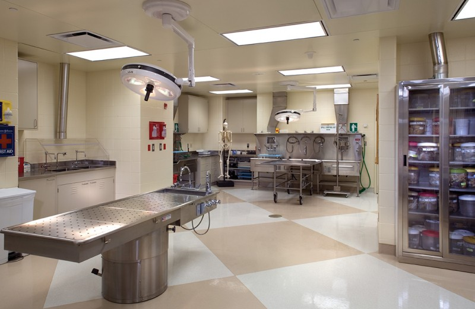

Home
Internship
Internship

For the summer of 2019, I will be interning at Yale Pathology in the Morgue and Autopsy Services. I will be working with Anatomic Pathology and assisting with autopsies. This will include helping with dissection, preservation and analysis of tissues. Alongside medicial students, staff, and professors I will be assisting in autopsies of patients from Yale New Haven Hospital as well as the surrounding area. My hope for this internship is that it helps me to narrow down what I want to do post grad, whether it be to continue on to get my Masters or Doctorate in some Biology field, or that I should reconsider what I want to do with my Forensic Science degree.